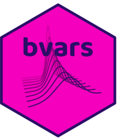

Package index
-
bvars-packagebvars - Bayesian Forecasting with Large Vector Autoregressions
-
compute_fitted_values(<PosteriorBVAR>) - Computes posterior draws from data predictive density
-
compute_shocks(<PosteriorBVAR>) - Computes posterior draws of shocks
-
compute_shocks() - Computes posterior draws of shocks
-
compute_variance_decompositions(<PosteriorBVAR>) - Computes posterior draws of the forecast error variance decomposition
-
estimate(<BVAR>) - Bayesian Estimation via Gibbs sampler of a Bayesian VAR with a Flexible Error Term Specification
-
estimate(<PosteriorBVAR>) - Bayesian Estimation via Gibbs sampler of a Bayesian VAR with a Flexible Error Term Specification
-
forecast(<PosteriorBVAR>) - Forecasting using Structural Vector Autoregression
-
rmatnorm1() - Samples random numbers from the matrix-variate normal distribution
-
specify_bvar - R6 Class representing the specification of the
BVARmodel -
specify_posterior_bvar - R6 Class Representing
PosteriorBVAR -
specify_prior_bvar - R6 Class Representing
PriorBVAR -
specify_starting_values_bvar - R6 Class Representing
StartingValuesBVAR -
summary(<PosteriorBVAR>) - Provides posterior summary of VAR estimation
-
us_macro_chan - A 20-variable US macroeconomic system for the period 1959 Q4 – 2013 Q4